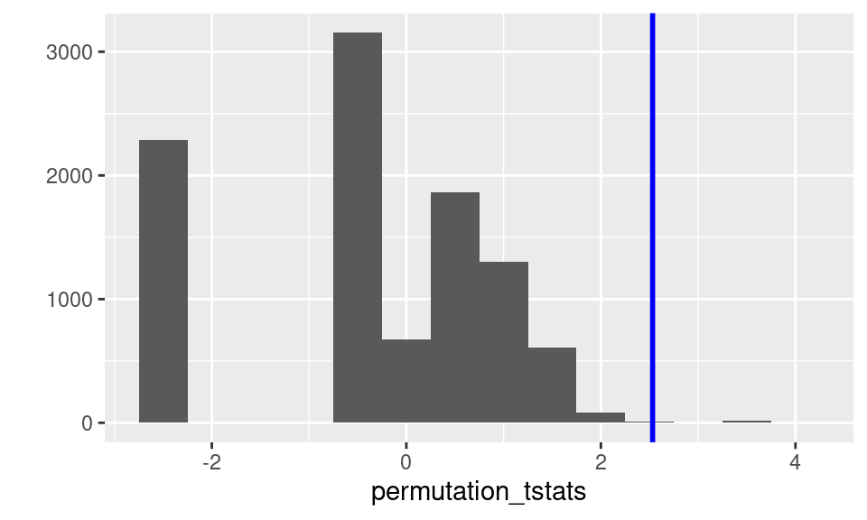

This lab examines permutation tests in R. We use the O-ring example from The Statistical Sleuth, section 4.3 (and Module 8, Lecture 1) to walk through running a permutation test with approximate rather than with exact combinatoric methods. For more information on the O-ring dataset, run ?ex2223; but you’ll need to install and load the Sleuth3 package first.
The O-rings, in combination with cold temperatures, were thought to be responsible for the Challenger space shuttle explosion. We will look at “O-ring incidents” divided into those occurring below 18 degrees Celsius (cold launches), and those occurring above 18 degrees Celsius (warm launches). (It’s important to note that this division is just for pedagogical reasons, allowing us to make a two group comparison. To avoid making such an arbitrary division, regression methods should be used.)
The O-ring data is available in the Sleuth3 package, but we will create it from scratch in the format of slide 9 of Module 8, Lecture 1.
cold <- c(1, 1, 1, 3) # number of o-ring incidents in launches < 18C
warm <- c(rep(0, times = 17), 1, 1, 2) # ditto above 18 degrees CNotice in defining warm we use the function rep(x, times) which repeats its first argument, x, times times. For example, here we repeat zero 17 times, which is less cumbersome than writing out 17 zeroes!
Our null hypothesis, as in lecture, is that both groups come from the same distribution. Here, instead of using the difference in group means as the test statistic, let’s use the t-statistic. \[ t = \frac{\bar{x}_{\text{cold}} - \bar{y}_{\text{warm}}}{\sqrt{s_{\text{cold}}^{2}/n_{\text{cold}} + s_{\text{warm}}^{2}/n_{\text{warm}}}} \]
For our data, we can calculate this as follows.
observed_t <- (mean(cold) - mean(warm)) /
sqrt(var(cold)/length(cold) + var(warm)/length(warm))
observed_t## [1] 2.531636Or alternatively, and to avoid any arithmetic errors on our part, we could use the t.test() function and just pull out the statistic:
t.test(cold, warm)$statistic## t
## 2.531636This is our observed statistic. Note we do not have to use the t-statistic as the test statistic. There are other reasonable choices depending on what you want to learn/test: difference in means (see class lecture), difference in proportions, and difference in medians, and so on.
We are using the t-statistic just as a convenient number that summarizes the evidence against the two groups coming from the same population. A large positive value would indicate the cold groups had a larger mean number of incidents than the warm group.
Since, we don’t really think this t-statistic has a t-distribution when the null hypothesis is true, instead of comparing the observed statistic to a t-distribution, we’ll compare it to a permutation distribution.
The permutation distribution is the distribution of this statistic (the t-statistic) under permutations of the group labels — the t-statistics we could possibly see if we randomly relabeled the observations with the cold and warm labels. This random relabeling simulates data consistent with the null hypothesis: if the launch temperature has no influence on the number of o-ring incidents, then it is like the labels “warm launch” and “cold launch” are applied at random to the observations.
To construct a permutation distribution, we’ll repeat many times:
We’ll use these many t-statistics as our estimate of the null distribution for this test statistic. We can get a p-value by directly calculating the proportion of values that are as or more extreme that the one we observed — 2.5316362.
Let’s start by working through the two steps we want to repeat many times.
To pick four observations to be the cold launches we’ll first just put all the observations together in a vector:
o_ring_data <- c(cold, warm)
o_ring_data## [1] 1 1 1 3 0 0 0 0 0 0 0 0 0 0 0 0 0 0 0 0 0 1 1 2The first four numbers correspond to the cold launches and the other 20 to the warm launches.
To get a random permutation, we’ll select four indices between 1 and 24 using sample(), and designate observations at those position as the cold launches, and the other 20 values the warm launches. We start by getting our four random numbers:
sample(1:24, size = 4, replace = FALSE)## [1] 2 13 3 21Notice replace is set to FALSE so the sampling happens without replacement and we cannot sample the same number twice. For our first random permutation, the 23rd, 5th, 7th and 24th observations get the cold launch label. We can take a look at this particular cold group, by using square bracket subsetting with the indices:
o_ring_data[c(23, 5, 7, 24)]## [1] 1 0 0 2Or the corresponding warm group, by excluding those indexes using negative indices:
o_ring_data[-c(23, 5, 7, 24)]## [1] 1 1 1 3 0 0 0 0 0 0 0 0 0 0 0 0 0 0 0 1Let’s store these as cold_perm and warm_perm:
cold_perm <- o_ring_data[ c(23, 5, 7, 24)]
warm_perm <- o_ring_data[-c(23, 5, 7, 24)]cold_perm <- o_ring_data[ c(23, 5, 7, 24)]
warm_perm <- o_ring_data[-c(23, 5, 7, 24)]cold_perm to warm_perm:
t.test(cold_perm, warm_perm)$statisticYou should get a t-statistic of 0.79. Ignoring the warm/cold labels and selecting four random observations to be the cold group, assumes those labels are unrelated to the response, i.e. assumes the null hypothesis is true. So, this t-statistic is one of the many equally likely outcomes assuming the null hypothesis is true.
Putting all those steps together, finding one value for our permutation distribution looks like:
cold_indices <- sample(1:24, size = 4, replace = FALSE)
cold_perm <- o_ring_data[ cold_indices]
warm_perm <- o_ring_data[-cold_indices]
t.test(cold_perm, warm_perm)$statisticBut what we really want to do, is repeat this many times, each time getting one equally likely value of the test statistic under the assumption that the null hypothesis is true. This collection becomes our null distribution.
To do this operation many times, let’s turn our “do it once” into a function:
perm_o_ring <- function(){
cold_indices <- sample(1:24, size = 4, replace = FALSE)
cold_perm <- o_ring_data[cold_indices]
warm_perm <- o_ring_data[-cold_indices]
t.test(cold_perm, warm_perm)$statistic
}
perm_o_ring()## t
## 0.5253449(This is a written a little lazily, see the end of the lab for the problems, but I did it this way so it was easy for you to see how it was turned into a function — the body is exactly the steps we just did once).
We replicate() our perm_o_ring() function 10,000 times:
permutation_tstats <- replicate(10000, perm_o_ring()) Looking at a histogram of these values gives us an estimate of our null distribution — the distribution of the t-statistic under the null hypothesis:
qplot(permutation_tstats, binwidth = .5) +
geom_vline(xintercept = observed_t, color = "blue", size = 1) 
The blue line has been added at the observed value of the t-statistic.
We can get an exact answer by comparing the values directly:
sum(permutation_tstats > observed_t) ## [1] 23Or convert it to a proportion by using mean() instead of sum():
mean(permutation_tstats > observed_t) ## [1] 0.0023This is our permutation based p-value: if the null hypothesis were true, we estimate the probability of obtaining a test statistic as or more extreme than that observed is 0.0023.
We might summarise our result like:
Based on these 24 launches, there is very strong evidence of a relationship between the number of O-ring incidents and whether the temperatures was below or above 18 degrees Celsius (one-sided permutation test, using a t-statistic, p-value = 0.0023).
It’s is bad practice for a function to depend on things beyond its inputs. Our perm_o_ring() function didn’t take any arguments, but it relied on us having data already defined in o_ring_data and implicitly that this data had 24 observations and the first group had four observations.
A better written function would move these dependencies to arguments, for example, let’s make the data, x, and sample size of the first group, n1 arguments:
perm_o_ring <- function(x, n1){
n <- length(x)
cold_indices <- sample(1:n, size = n1, replace = FALSE)
cold_perm <- x[cold_indices]
warm_perm <- x[-cold_indices]
t.test(cold_perm, warm_perm)$statistic
}
perm_o_ring(o_ring_data, n1 = 4)## t
## -0.6435596You might then argue that this could be used for any data where you want to use the t-statistic, so we might rewrite the body (but keep the exact same functionality), and give the function a more general name:
perm_tstat <- function(x, n1){
n <- length(x)
grp1_indices <- sample(1:n, size = n1, replace = FALSE)
grp1_perm <- x[grp1_indices]
grp2_perm <- x[-grp1_indices]
t.test(grp1_perm, grp2_perm)$statistic
}
perm_tstat(o_ring_data, n1 = 4)## t
## -2.703274You could take this further and let the type of statistic be an argument too, but we’ll leave it here for now.